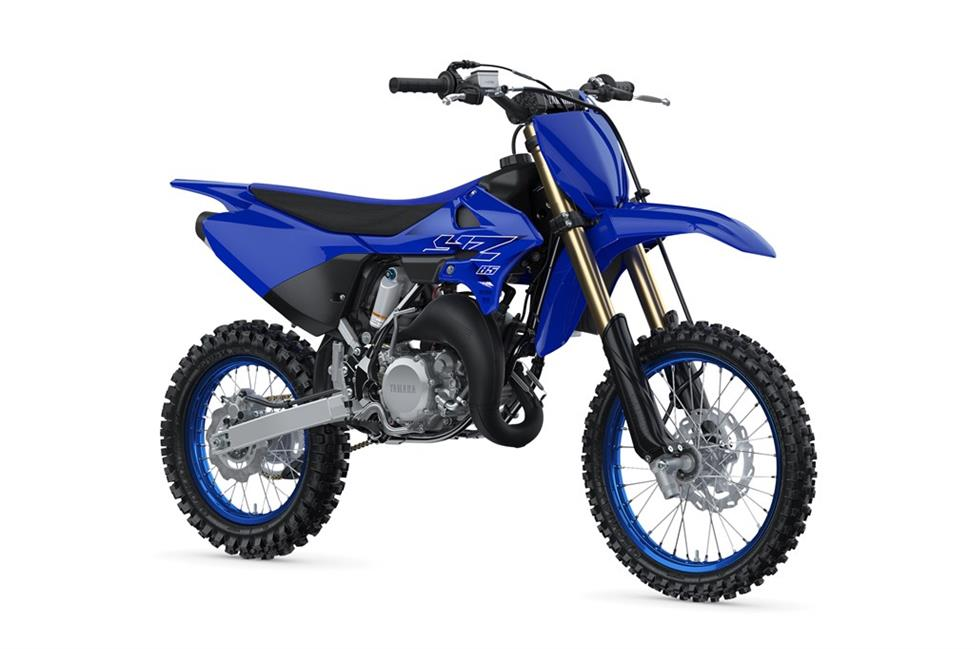

As an important entry into the world of competitive motocross, the YZ85 has long been the mini race bike of choice for future champions. Light, nimble and fun with a top shelf suspension, it serves up big-bike spec in a small bike package. Along with its proven liquid-cooled YPVS-equipped 85cc powerplant, fully adjustable suspension and large diameter brakes, the new 2022 YZ85 boasts numerous enhancements to expand its overall performance. Rider ergonomics have been improved by way of a new, narrower tank design, flatter seat, new side covers and slimmer, symmetrical radiator shrouds. This enables greater freedom of movement for smooth shifting of body weight and better machine control. For demanding junior racers, the new YZ85 has been enhanced in several key chassis areas to optimise strength and rigidity, including revisions to the main frame, swingarm and rear wheel axle. The aluminium swingarm was redesigned to enhance balance between longitudinal and torsional rigidity for improved handling stability. A new removable rear subframe constructed from lightweight, high-strength aluminium reduces weight. The rear brake master cylinder now has a built-in sub-reservoir providing more linear brake response and increased control.
